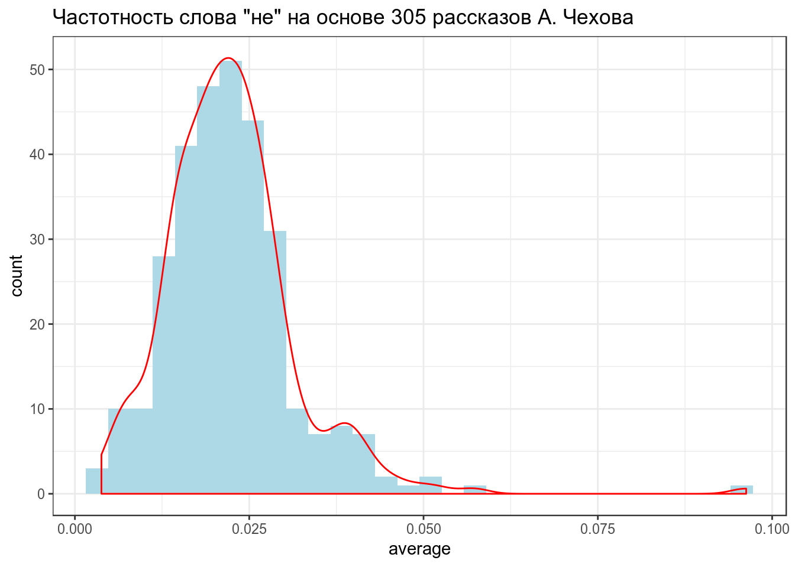
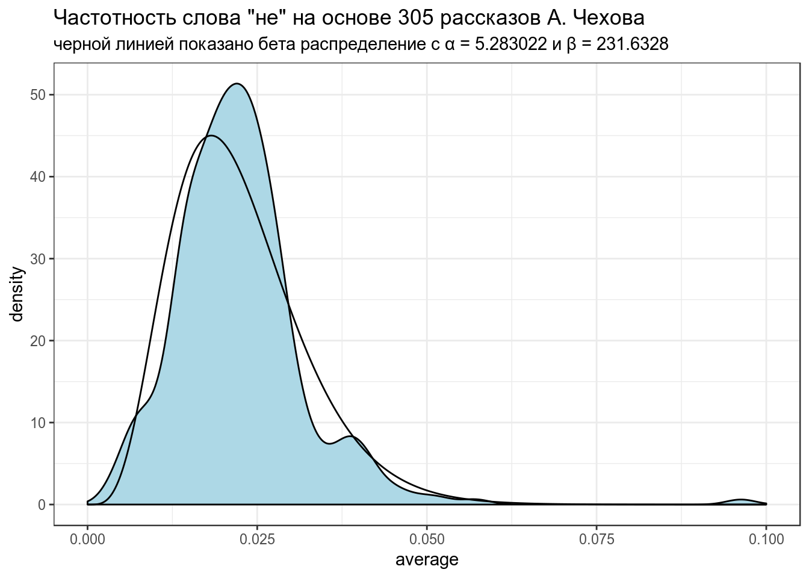
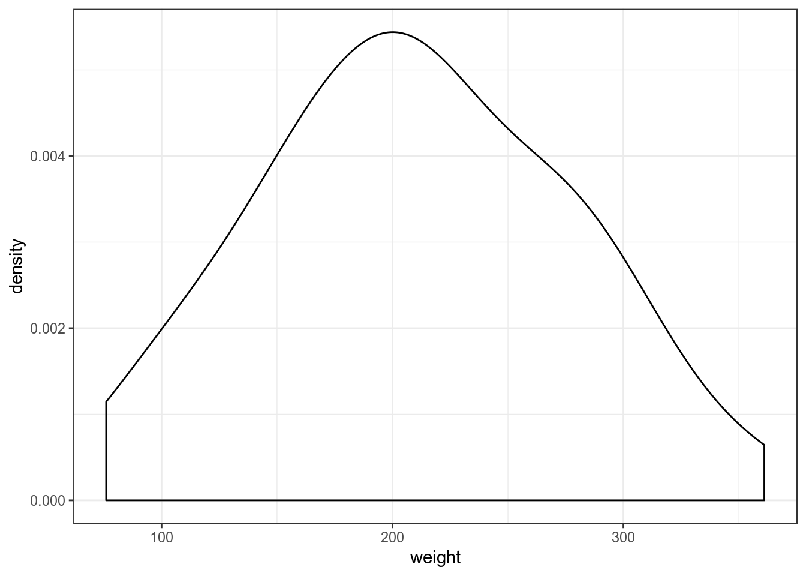
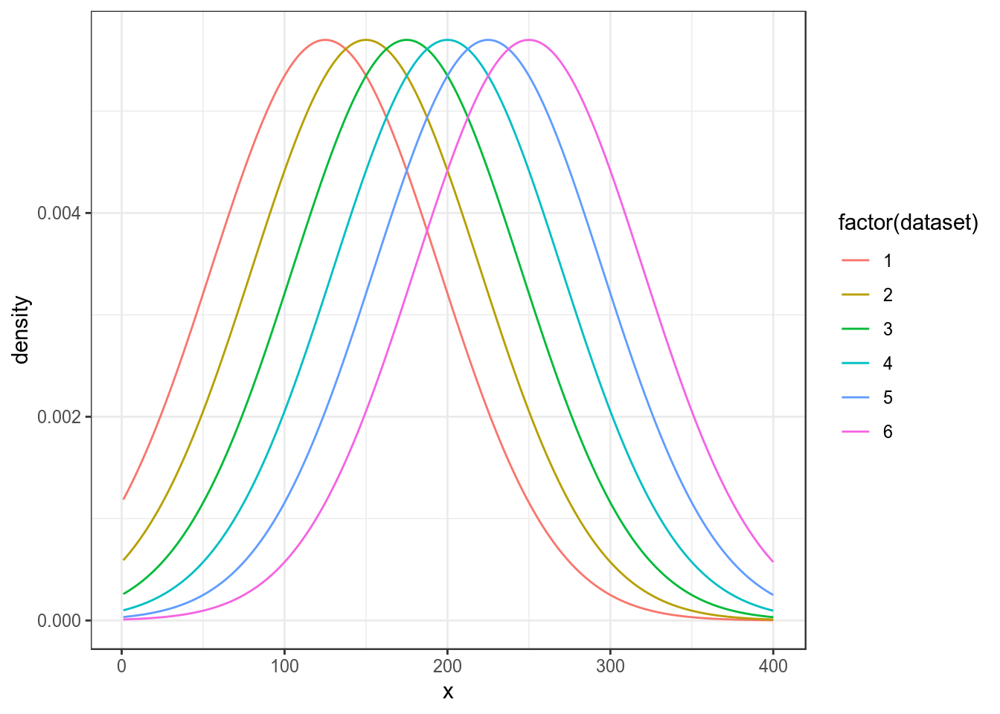
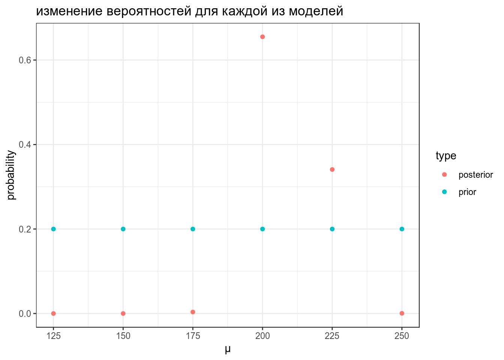
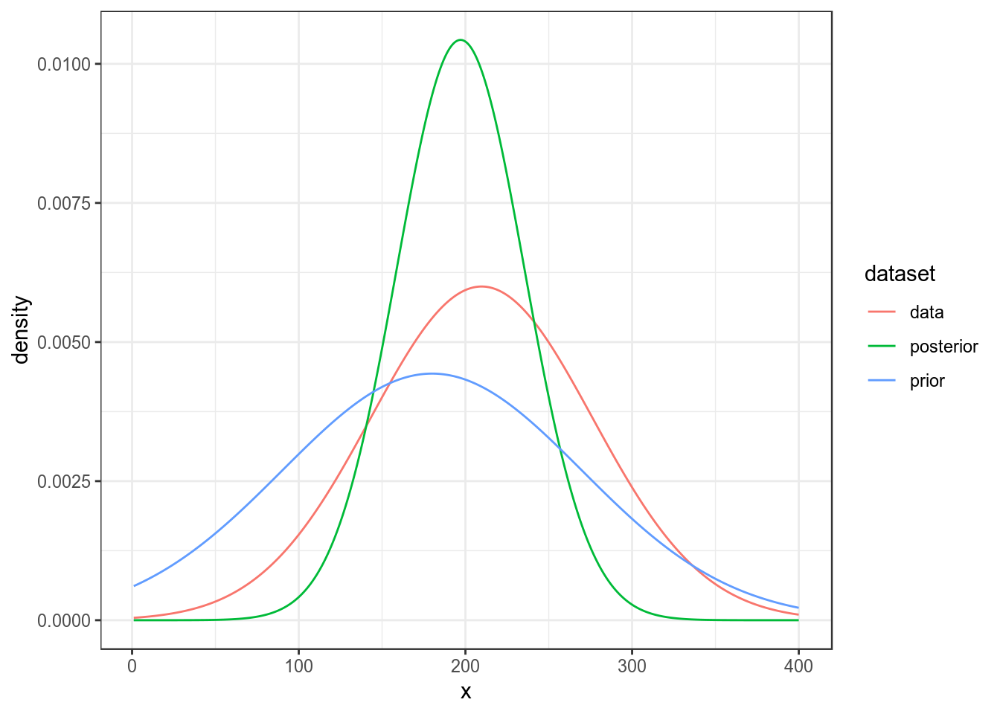
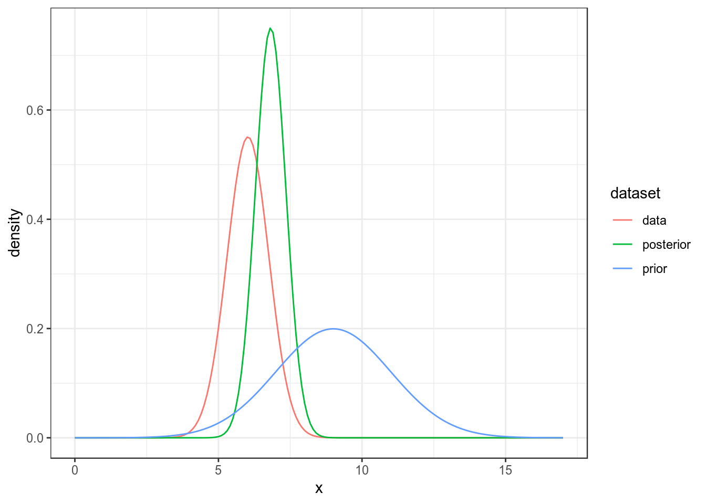

library(tidyverse)Метод Empirical Bayes estimation — один из байесовских методов, в рамках которого:
chekhov <- read_csv("https://raw.githubusercontent.com/agricolamz/2019_FE_R_statistics/master/data/chekhov.csv")## Parsed with column specification:
## cols(
## titles = col_character(),
## word = col_character(),
## n = col_double(),
## n_words = col_double()
## )chekhov %>%
mutate(trunc_titles = str_trunc(titles, 25, side = "right"),
average = n/n_words) ->
chekhov
head(chekhov)## # A tibble: 6 x 6
## titles word n n_words trunc_titles average
## <chr> <chr> <dbl> <dbl> <chr> <dbl>
## 1 Письмо к ученому соседу не 32 1327 Письмо к ученому… 0.0241
## 2 За двумя зайцами погонишьс… не 42 1311 За двумя зайцами… 0.0320
## 3 Папаша не 70 1686 Папаша 0.0415
## 4 Тысяча одна страсть, или С… не 8 954 Тысяча одна стра… 0.00839
## 5 Перед свадьбой не 60 1459 Перед свадьбой 0.0411
## 6 Жены артистов не 91 3686 Жены артистов 0.0247Наши данные:
chekhov %>%
select(trunc_titles, word, average) %>%
ggplot(aes(average)) +
geom_histogram(fill = "lightblue")+
geom_density(color = "red")+
labs(title = 'Частотность слова "не" на основе 305 рассказов А. Чехова')## `stat_bin()` using `bins = 30`. Pick better value with `binwidth`.
В данном случае, данные можно подогнать под бета распределение \(Χ \sim Beta(α_0, β_0)\) (это далеко не всегда так). Подгонку можно осуществлять множеством разных функций, но я воспользуюсь следующей системой уравнений:
\[\mu = \frac{\alpha}{\alpha+\beta}\] \[\sigma = \frac{\alpha\times\beta}{(\alpha+\beta)^2\times(\alpha+\beta+1)}\]
Из этой системы можно выразить \(\alpha\) и \(\beta\):
\[\alpha = \left(\frac{1-\mu}{\sigma^2} - \frac{1}{\mu}\right)\times \mu^2\] \[\beta = \alpha\times\left(\frac{1}{\mu} - 1\right)\]
mu <- mean(chekhov$average[chekhov$word == "не"])
var <- var(chekhov$average[chekhov$word == "не"])
alpha0 <- ((1 - mu) / var - 1 / mu) * mu ^ 2
beta0 <- alpha0 * (1 / mu - 1)
alpha0## [1] 5.283022beta0## [1] 231.6328Посмотрим, насколько хорошо, получившееся распределение подходит к нашим данным:
x <- seq(0, 0.1, length = 1000)
estimation <- data_frame(
x = x,
density = c(dbeta(x, shape1 = alpha0, shape2 = beta0)))
chekhov %>%
filter(word == "не") %>%
select(trunc_titles, word, average) %>%
ggplot(aes(average)) +
geom_density(fill = "lightblue")+
geom_line(data = estimation, aes(x, density))+
labs(title = 'Частотность слова "не" на основе 305 рассказов А. Чехова',
subtitle = "черной линией показано бета распределение с α = 5.283022 и β = 231.6328")
Полученное распределение можно использовать как априорное распределение для апдейта значений из каждого рассказа. Этот трюк и называется Empirical Bayes estimation.
В базе данных Phoible, в которой собраны фонологические инвентари в языках мира. В датасет записано три переменных:
Оцените параметры бета распределения для данных при помощи эмпирической байесовской оценки. Получив параметры априорного бета распределения, проведите байесовский апдейт для каждого языка. Посчитайте модуль разницы между апостериорной и изначальной долями, представленными в данных. В ответе приведите модуль разницы для языка Acoli с точностью до трех знаков после запятой.
Встроенный датасет ChickWeight содержит вес цыплят (weight) в зависимости от типа диеты (Diet). Мы будем анализировать 20-дневных птенцов.
ChickWeight %>%
filter(Time == 20) ->
chicks
chicks %>%
ggplot(aes(weight))+
geom_density()
Начнем с апостериорных параметров для наблюдений \(x_1, ... x_n\) со средним \(\mu_{data}\) известной дисперсией \(\sigma_{known}^2\)
Мы можем рассматривать эту задачу как выбор между несколькими моделями с разными средними:
data_frame(x = rep(1:400, 6),
density = c(dnorm(unique(x), mean = 125, sd = 70),
dnorm(unique(x), mean = 150, sd = 70),
dnorm(unique(x), mean = 175, sd = 70),
dnorm(unique(x), mean = 200, sd = 70),
dnorm(unique(x), mean = 225, sd = 70),
dnorm(unique(x), mean = 250, sd = 70)),
dataset = rep(1:6, each = 400)) %>%
ggplot(aes(x, density, color = factor(dataset)))+
geom_line()
Дальше мы можем точно так же апдейтить, как мы делали раньше:
data_frame(mu = seq(125, 250, by = 25),
prior = 0.2,
likelihood = c(prod(dnorm(chicks$weight, mean = 125, sd = 70)),
prod(dnorm(chicks$weight, mean = 150, sd = 70)),
prod(dnorm(chicks$weight, mean = 175, sd = 70)),
prod(dnorm(chicks$weight, mean = 200, sd = 70)),
prod(dnorm(chicks$weight, mean = 225, sd = 70)),
prod(dnorm(chicks$weight, mean = 250, sd = 70))),
product = prior*likelihood,
posterior = product/sum(product)) ->
results
results## # A tibble: 6 x 5
## mu prior likelihood product posterior
## <dbl> <dbl> <dbl> <dbl> <dbl>
## 1 125 0.2 2.06e-127 4.13e-128 2.39e-15
## 2 150 0.2 4.74e-120 9.48e-121 5.48e- 8
## 3 175 0.2 3.08e-115 6.16e-116 3.56e- 3
## 4 200 0.2 5.66e-113 1.13e-113 6.55e- 1
## 5 225 0.2 2.95e-113 5.89e-114 3.41e- 1
## 6 250 0.2 4.34e-116 8.68e-117 5.02e- 4results %>%
select(mu, prior, posterior) %>%
gather(type, probability, prior:posterior) %>%
ggplot(aes(mu, probability, color = type))+
geom_point()+
labs(title = "изменение вероятностей для каждой из моделей",
x = "μ")
Во первых, нам понадобиться некоторая мера, которая называется точность (precision):
\[\tau = \frac{1}{\sigma^2}\]
\[\tau_{post} = \tau_{prior} + \tau_{data} \Rightarrow \sigma^2_{post} = \frac{1}{\tau_{post}}\]
\[\mu_{post} = \frac{\mu_{prior} \times \tau_{prior} + \mu_{data} \times \tau_{data}}{\tau_{post}}\]
Так что если нашим априорным распределением мы назовем нормальное распределение со средним около 180 и стандартным отклонением 90, то процесс байсовского апдейта будет выглядеть вот так:
sd_prior <- 90
sd_data <- sd(chicks$weight)
sd_post <- (1/sd_prior+1/sd_data)^(-1)
mean_prior <- 180
mean_data <- mean(chicks$weight)
mean_post <- weighted.mean(c(mean_prior, mean_data), c(1/sd_prior, 1/sd_data))
data_frame(x = rep(1:400, 3),
density = c(dnorm(unique(x), mean = mean_prior, sd = sd_prior),
dnorm(unique(x), mean = mean_data, sd = sd_data),
dnorm(unique(x), mean = mean_post, sd = sd_post)),
dataset = rep(c("prior", "data", "posterior"), each = 400)) %>%
ggplot(aes(x, density, color = dataset))+
geom_line()
shiny::runGitHub("agricolamz/bayes_for_normal_app") В датасет записаны данные по исследованию мочи [Andrews, Herzberg 1985]. В переменной pH записано значение уровня кислотности. Сделайте байесовский апдейт наблюдаемых данных, используя априорное распределение \(\mathcal{N}(\mu = 9, \sigma^2 = 2)\).
Укажите апостериорное стандартное отклонение:
Укажите апостериорное среднее:
Попробуйте визуализировать:
## Parsed with column specification:
## cols(
## r = col_double(),
## gravity = col_double(),
## ph = col_double(),
## osmo = col_double(),
## cond = col_double(),
## urea = col_double(),
## calc = col_double()
## )